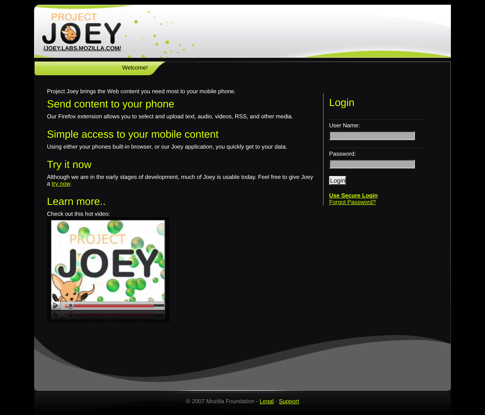
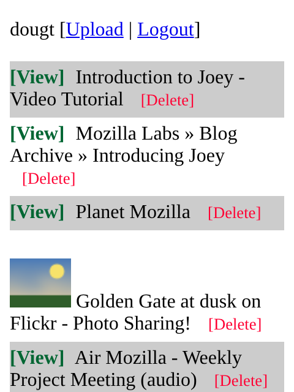

Code tour
The server: CakePHP app and joeyd
Everything under server/. A conventional CakePHP 1.1 application does the web work; a Python daemon does the heavy lifting. This page walks the controllers, the four sets of views, and the daemon, quoting the code where the code says it best.
What is in server/
server/
.htaccess rewrite everything into app/webroot
index.php CakePHP front controller (fallback when rewriting is off)
docs/ CakePHP's own INSTALL, README, CHANGELOG, COPYING
cake/ vendored CakePHP 1.1.12.4205 (December 2006)
tools/import_buildlist.pl turn a J2ME Polish build list into phones rows
app/
app_controller.php session check, rest flag, X-joey-status codes
app_model.php adds a Sanitize instance to every model
config/ core.php, routes.php, database.php, config.php-dist, sql/joey.sql
controllers/ admin, files, uploads, users, version + components/
models/ user, upload, file, contentsource, contentsourcetype, phone, operator
views/ layouts/, elements/, and one folder per controller
vendors/BrowserAgent.class.php
scripts/ joeyd.py, delete.py, fetcher.php, hammer_joeyd.sh, joeyd.conf-dist
webroot/ css, js, img, vendor (iUI, two Flash players), terms, release_notes, services/monitor.phpThe framework is the stock 1.1 tree: cake/VERSION.txt reads 1.1.12.4205 and the install notes still promise PHP 4 compatibility. The application code uses PHP 4 idioms throughout (var properties, &$controller by-reference components, .thtml templates with short echo tags). Routing is almost entirely convention: routes.php connects only / to uploads/index.
Source: server/cake/VERSION.txt, server/docs/INSTALL.txt, server/app/config/routes.php
Controllers
AppController: the shared contract
Every controller inherits three things: the nbClient flag (set when rest is in the request), the table of X-joey-status codes, and a beforeFilter that forces a login for every action except users/activate, login, register, resetpasswordemail, resetpassword and version/index. An unauthenticated browser is remembered in login_referrer and bounced to /users/login; an unauthenticated client gets status 511 and nothing else.
| Controller / action | What it does | Layout |
|---|---|---|
uploads/index | Lists the user's uploads, filtered by type= (videos, audio, images, rss, microsummaries, text, browserstuff, all) and paginated by the Pagination component. Looks up the user's phone to size thumbnails at half the screen (falls back to 100x100). For the iPhone it runs eight queries, one per category, and hands them all to one iUI page. | default / mp / iphone / none (rest) |
uploads/add | Manual upload form, and the endpoint the add-on and midlet POST to. add/rss?source=<urlencoded> pre-fills an RSS content source so a bookmarklet or link can subscribe a feed. Dispatches to _saveUploadedFile or _saveUploadedContentSource. | default / mp |
uploads/delete/<id> | Verifies ownership, soft-deletes the upload inside a transaction, hard-deletes the content source and file rows, unlinks the three files, then renders deleted_success or deleted_failed (fragments for the AJAX caller), flashes for WAP, or returns a status for clients. | fragment / mp / none |
uploads/deleteAll | Loops delete over everything the user owns and flashes "N items deleted". | default |
uploads/deleteByFileID/<file_id> | Midlet entry point: maps a file id to its upload and calls delete. | none |
uploads/rss | RSS 2.0 of the user's uploads. | xml |
files/view/<id>[/original|/preview] | Checks that the session user is attached to the upload, picks the right one of the three files, streams it with its content type and length, and forces a Content-Disposition filename for 3GP so handsets open the player. Missing file: img/na.png. | none (view.thtml just sets headers and echoes) |
files/wrapper/<id> | Echoes a borderless full-size <iframe src="/files/view/…"> and exits. Used by the iPhone list so iUI can treat a file as a page. | none |
files/delete/<id> | Redirects to uploads/delete for the owning upload. | redirect |
users/register | Lower-cases the username, rejects duplicates by username or e-mail, stores sha1(password), generates a uniqid() confirmation code, creates the three upload directories (and deletes the user again if that fails), e-mails an activation link, logs the user in, and flashes "Registration successful. Please check your email." | default |
users/activate/<code> | Clears confirmationcode when it matches. Until then login answers 513 / "your account has not been activated". | default |
users/login | Lower-cases the username and compares the SHA-1. Browser: redirect to login_referrer or /uploads/index. Client: X-joey-version plus status 200. Offers a "Use Secure Login" link when the site is on plain HTTP. | default / mp / iphone |
users/edit | Change e-mail (re-sends an activation code), password, phone number, handset and carrier. Changing the handset clears ever_updated on all uploads so joeyd re-processes them. | default |
users/resetpasswordemail, users/resetpassword/<user>/<token> | Looks the user up by username or e-mail, mails a link whose token is md5 of the stored hash, and accepts a new password when the token matches. | default |
users/getSoftware[/sendJoeyURL] | Links to /app/webroot/ff/joey.xpi and to the JAR named in the user's phones row. The button, and the sendJoeyURL verb used by the "Did you know…" banner, text the site URL to the phone via SmsComponent. | default |
users/help, users/logout | Static help links; session delete and redirect to /. | default |
version/index/<ver>[/firstrun] | Reads webroot/release_notes/<ver> and renders it inside the welcome layout. The add-on opens this on first run and on every version change. Not session-protected. | joeyclient |
admin/index | For administrator = 1 users only: user and upload totals, both for the last 24 hours, pending confirmations, and the raw contents of joeyd's stat file. | none |
Two actions that other code calls are not here: uploads/raw/<id> (the midlet's GetRawURLNetworkRequest) and uploads/updateUpload/<id> (scripts/fetcher.php). The empty update_all_uploads.thtml and the one-line add_rss.thtml ("Processing rss now.. One second, okay.") suggest they existed in an earlier revision, before the refresh work moved into joeyd.
Saving a file, in the controller's own words
_saveUploadedFile is the heart of the upload path. The quota check and the "browser stuff" special case are worth seeing verbatim:
$filesize = filesize($this->data['File']['Upload']['tmp_name']);
if (!$this->User->hasAvailableSpace($this->_user['id'], $filesize)) {
if ($this->nbClient) {
$this->returnJoeyStatusCode($this->ERROR_NO_SPACE);
}
$_used = $this->Joey->bytesToReadableSize($this->User->totalSpaceUsedByUserId($this->_user['id']));
$_max = MAX_DISK_USAGE.' MB'; //this is already in MB
$_size = $this->Joey->bytesToReadableSize($filesize);
$this->Error->addError("You don't have enough space to save that file. You're using {$_used} out of {$_max} and your upload takes up {$_size}.", 'File/Upload');
unlink($this->data['File']['Upload']['tmp_name']);
return false;
}
...
if ($this->data['File']['Upload']['type'] == "browser/stuff")
{
$prior_upload = $this->Upload->findDataByTypeAndURL($this->data['File']['Upload']['type'],$this->data['Upload']['referrer']);
if (!empty($prior_upload['File']['original_name']))
{
$_destination_file = UPLOAD_DIR."/{$this->_user['id']}/originals/".$prior_upload['File']['original_name'];
...
$this->notifyJoeyD($prior_upload['Upload']['id']);
return true;
}
}And the hand-off to the daemon is four lines of curl:
function notifyJoeyD($id) {
$ch = curl_init();
curl_setopt($ch, CURLOPT_URL, "http://" . JOEYD_SERVER_ADDRESS . "/" . $id . "/now");
curl_setopt($ch, CURLOPT_CONNECTTIMEOUT, 5);
curl_exec($ch);
}Source: server/app/app_controller.php, server/app/controllers/uploads_controller.php, server/app/controllers/users_controller.php, server/app/controllers/files_controller.php, server/app/controllers/version_controller.php, server/app/controllers/admin_controller.php
Components and helpers
| Name | Role |
|---|---|
JoeyComponent | bytesToReadableSize() for error messages, and getJ2MEMidletVersion(), which scans webroot/ff/build.properties for a joey.version= line and returns "0.0" if the file is missing. That value becomes the X-joey-version header. |
StorageComponent | Owns the MIME-to-suffix map (text/plain→txt … rss-source/text→rss, microsummary/xml→mcs, widget/joey→jwt, browser/stuff→bro) and createFileForUploadId(), which inserts a placeholder files row typed text/html ("because we will update this later") and touches an empty file for content-source uploads. |
SmsComponent | sendCurrentUserSMS($subject, $message): strip dashes from the phone number, append @ and the operator's emaildomain, call mail(). Returns -1 when the carrier has no gateway domain. The code's own comment: "very US centric." |
ErrorComponent | Collects field-keyed error strings, optionally invalidates the matching model field, and optionally writes to logs/error.log via joeylog() when LOGGING_ENABLED. |
PaginationComponent + helper | A third-party CakePHP 1.1 pagination pair. Defaults to 5 per page with choices of 2, 5, 10, 20, 50, 100, 500; auto-detects AJAX and falls back to plain links for mobile browsers. |
JoeyajaxupdateHelper | Emits a hidden <div id="joeyEvent">page,limit,type,command</div> into AJAX responses. The page script reads it after a delete to know which list page to reload. |
BrowserAgent (vendor) | Two static regex tests, isIPhone() and isMobile(), that drive layout selection. |
Source: server/app/controllers/components/, server/app/views/helpers/, server/app/vendors/BrowserAgent.class.php
Views and layouts
Five layouts share one set of controller actions. The desktop theme is the "green" look: black page background, a light banner reading PROJECT JOEY with the kangaroo, a green header bar built from three sliced JPEGs (bar-left, bar-middle, bar-right), and a footer that says © 2007 Mozilla Foundation - Legal - Support. The layout and element files carry the license headers of the addons.mozilla.org site and Kubla CMS, with Wil Clouser and Marcio Galli added as contributors; the Joey team started from the AMO templates and restyled them.
The images below are reconstructions. They were rendered from the templates, CSS and image assets in this repository with representative sample data, not captured from the live joey.labs.mozilla.com, which no longer exists.

users/login.thtml in the default layout: the pitch ("Project Joey brings the Web content you need most to your mobile phone"), a YouTube still, and the login panel with "Use Secure Login" and "Forgot Password?". Reconstruction from the original templates and CSS.
uploads/index.thtml: type filter links, the "Did you know" SMS banner, and one row per upload with a type-specific thumbnail, title linked to the referrer, size, upload time and an AJAX Delete. Reconstruction.
users/register.thtml: username, e-mail, password, phone number, handset and carrier pickers, links to the Terms, EULA and Privacy Policy, and the beta disclaimer paragraph. Reconstruction.
users/get_software.thtml: the XPI link, the per-handset JAR link and the button that texts the link to your phone ("This might cost you something, but you already know that."). Reconstruction.
version/index.thtml in the joeyclient layout, showing release_notes/0.3.0.0: the Guided Tour, Learn More and Get Involved panels. The tour button is hidden until the add-on announces itself to the page. Reconstruction.
iphone layout: iUI's grey pinstripes and blue toolbar, a home list of Browser stuff, Videos, Images, Audio, RSS and Text. Reconstruction at 320 px.
mp layout as a feature-phone browser would show it: username and Upload | Logout links, alternating rows with [View] and [Delete], "Go to page" pagination. Reconstruction.| Layout | Stylesheets / libraries | Used by |
|---|---|---|
default.thtml | green.css, joey.css, prototype.js, __utm.js; elements green_banner, green_header, green_footer | All desktop pages |
joeyclient.thtml | joeyclient.css (white, mainshade.jpg gradient, background-logo.jpg "Welcome to Joey!" banner), prototype.js, joeyclient.js | version/index (first-run and release notes) |
iphone.thtml | vendor/iui/iui.css, iui.js; viewport width=320 | uploads/index, users/login when isIPhone() |
mp.thtml | mp_joey.css; served as application/vnd.wap.xhtml+xml; elements mp_header, mp_footer, mp_pagination | uploads/index, uploads/add, users/login when isMobile() |
xml.thtml | none; emits the XML declaration | uploads/rss |
plain.thtml | cake.generic.css, joey.css; the older header/footer elements (the navbar element with its "Temporary menu" is included from header.thtml only as a commented-out line) | Not referenced by any controller in this tree; a leftover from before the green theme |
The other webroot directories hold the legal pages (terms/: EULA, Terms of Service and a Privacy Policy exported from Word, with the law firm's document tags still in the HTML), the release notes directory (one file, 0.3.0.0), and the two Flash players.
Source: server/app/views/layouts/, server/app/views/elements/, server/app/webroot/css/, server/app/webroot/terms/, server/app/webroot/release_notes/0.3.0.0
In-page media handlers
The desktop uploads page is not just a list. joeybag.js ("JavaScript functions to support the Joey Inner-Browsing Experience") attaches a type-specific viewer to each row, opening inline in the expandItem-<id> container under the title:
- Flash video. Clicking a video thumbnail or its "play" link calls
joeyMedia_mediaplayer_createPlayer, which injectsvendor/webflv.swf?fileName=/files/view/<id>/originalat 320x240 and builds its own play/pause, stop and seek-thumb controls out of divs. The SWF reports time back throughvisinoteembed_DoFSCommand("timeevent", "onmetadata"), and a 1.5-secondsetTimeoutloop nudges it for the current position. The original FLV is played, not the 3GP. - MP3. A 17x17
vendor/musicplayer.swfis embedded directly in the thumbnail cell with the file URL and the green77bb33colour scheme. - RSS.
joeyMedia_rssfetchloads the feed XML and transforms it in the browser with an inline XSLT stylesheet (blenderObject) that handles both RSS 1.0 (RDF) and RSS 2.0, rendering a list of.itemlinks. The link text toggles between "open" and "close". - Images and text.
joeyMedia_imageShowswaps in the original at 320 px wide and adds an "Open in new window" link;joeyMedia_textShowloads the text file into a 320x240 iframe.
Delete is an $ajax->link that updates messagesBar, hides the row, then calls execJoey() with the hidden joeyEvent payload. On okay-reload it issues new Ajax.Updater('content', "/uploads/index?show=…&page=…&type=…") to redraw the current page; otherwise it alerts "Opa! I believe Joey failed to delete - or something - please report this problem". The template keeps a commented-out plain link because, as the comment says, "we need to have a safe mode and always be able to fall back to non ajax when needed".
Source: server/app/webroot/js/joeybag.js, server/app/views/uploads/index.thtml, server/app/views/uploads/deleted_success.thtml, server/app/views/helpers/joeyajaxupdate.php
joeyd in depth
The daemon's own docstring is the best summary:
joeyd
This is an implementation of a webservice that processes
joey uploads offline. Once started up, we will listen to a
high port waiting for incoming requests in the form of
/<upload_id>. When we get a request, we toss the request
into a thread pool for processing.
if "/now" is append on a request, we make an attempt to put
the new request at the top of the queue for processing.Startup and configuration
Options come from an in-house cse.ConfigurationManager that merges the command line with ./joeyd.conf. The shipped template lists only the database fields, UploadDir, FfmpegCmd and ConvertCmd; the rest default in code: threadcount 100, listenAddress localhost, listenPort 8777, logPathName ./joeyd.log, statPathName ./joeyd_stat.log. Run with -u <id> it processes one upload and exits; with -l it becomes the service:
if "listen" in workingEnvironment:
joeyd_refresher_timeout()
joeyd_refresher_timer = Timer(30*60.0, joeyd_refresher_timeout)
joeyd_refresher_timer.start()
logMessage("joeyd timer setup.")
joeyd_heartbeat_timer = Timer(10.0, joeyd_heartbeat_timeout)
joeyd_heartbeat_timer.start()
logMessage("joeyd heartbeat setup.")
joeyd_server = HTTPServer((workingEnvironment["listenAddress"], workingEnvironment["listenPort"]), RequestHandler)
logMessage("Connected on: %s:%s" % (workingEnvironment["listenAddress"], workingEnvironment["listenPort"]))
joeyd_server.serve_forever()The cse package (configuration manager, MySQLDatabase wrapper) is imported but not in this repository.
The listener and the queue
RequestHandler.do_GET splits the path, takes the second segment as the upload id, and queues processUpload. The thread pool is the Python Cookbook recipe with one addition, a forceToTop flag that inserts at index 0; that is what /now uses. Each pool thread opens its own Database connection once and reuses it. One quirk is visible in the handler: the send_response(200) lines sit inside the else branch, so a /now request is queued but never answered, and the PHP side relies on its connect timeout rather than a reply.
The refresher
Every 30 minutes (hard-coded; the CONTENTSOURCE_REFRESH_TIME constant in the PHP config is not consulted) the refresher queues every live upload that either has a content source or has never been processed, provided it has not been touched in the last half hour:
WHERE (Contentsource.source IS NOT NULL OR Upload.ever_updated = 0) AND
Upload.deleted IS NULL AND
Upload.modified < DATE_SUB(NOW(), INTERVAL 30 MINUTE)This single query gives feeds and microsummaries their periodic updates, retries uploads whose first processing failed or was missed, and re-transcodes everything after a user changes handset.
Transcode
processUpload picks Transcode when the row has no source. The command lines, exactly as spawned:
# audio -> AMR-NB, 8 kHz mono, 7.4 kbit/s
ffmpeg -y -i <from> -ar 8000 -ac 1 -ab 7400 -f amr <to>
# image -> 100x100 PNG, then a 50x50 preview from that
convert -geometry 100x100 <from> <to>
convert -geometry 50x50 <to> <preview>
# video -> QCIF H.263 + AMR-NB in a 3GP container, plus a PNG frame at 5 s
ffmpeg -y -i <from> -ab 12.2k -ac 1 -acodec libamr_nb -ar 8000 -vcodec h263 -r 10 -s qcif -b 44K -pass 1 -passlogfile <tmp> <to>
ffmpeg -y -i <from> -ss 5 -vcodec png -vframes 1 -an -f rawvideo -s '100x100' <preview>Text and browser/stuff are copied with cp. After each branch updateFileTypes rewrites the row's types (audio becomes audio/amr, images image/png, video video/3gpp with an image/png preview, browser stuff text/html) and updateFileSizes stats the three files. Only the video step checks nothing: _transcodeVideo always returns 0.
Update
Rows with a source go to Update, dispatched on the content source type name:
rss-source/text. Extractsrss=(and optionallyicon=) from the source text, fetches withhttplib2.Httpusing an on-disk cache underUPLOAD_DIR/cacheand a Firefox 2 user agent, and parses withfeedparser. The upload title is replaced with the channel title. If the first entry has enclosures, the newest entry'saudio/mpegenclosure is downloaded as the original, given the entry's timestamp withos.utime, and transcoded to AMR; a later run skips the work when the file is already as new as the newest entry. Otherwise_buildRssOutputwrites an HTML digest, a<dl>of linked titles and descriptions, and the file becomestext/htmlwith original typeapplication/rss+xml.microsummary/xml. Fetches the referrer page, parses the stored generator document withlxml.etree.HTMLParser, pulls the XPath from/html/body/generator/template/transform/template/value-of/@select, evaluates it against the page and writes the first match's HTML to both the original and the main file. If nothing matches: "We couldn't process this element. Perhaps the content is generated dynamically?"widget/joey. Logs and returns success. Unimplemented.
Stats, monitoring and tools
Every 10 seconds the heartbeat rewrites the stat file with a dozen counters: pending tasks, requests received, fetches and failures and bytes, and per-type processed counts. admin/summary reads that file into the admin page. webroot/services/monitor.php is the Nagios probe: it connects to MySQL, checks that convert and ffmpeg exist and that the upload and cache directories are writable, and returns HTTP 500 on any failure. delete.py shares joeyd's configuration and permanently removes one upload's rows and files. hammer_joeyd.sh is the load test: nine backgrounded wget calls against http://localhost:8777/299.
Source: server/app/scripts/joeyd.py, server/app/scripts/joeyd.conf-dist, server/app/scripts/delete.py, server/app/scripts/hammer_joeyd.sh, server/app/webroot/services/monitor.php, server/app/controllers/admin_controller.php
The phone build list
J2ME Polish builds one JAR per target device. The team kept a tab-separated build list (name, locale, jar, jad, user agent, WxH) and tools/import_buildlist.pl diffs a new list against the old one and prints INSERT INTO phones … statements for the additions. It refuses to run if a device was removed: "ERROR. YOU CANNOT REMOVE DEVICES FROM BUILD LIST!!!", because users already point at those rows.
The phones row does three jobs at runtime: users/getSoftware links to /app/webroot/ff/<jar_name>; uploads/index sets upload_preview_width and upload_preview_height to half the screen; and joeyd's getPhoneDataByUserId fetches the row for every transcode, even though the sizes are not used yet. The registration form says it plainly: "If your phone isn't there, it means that we do not have software available for your phone. This doesn't mean you can't use Joey. Instead, try accessing Joey in your phone's browser."
Source: server/tools/import_buildlist.pl, server/app/controllers/users_controller.php, server/app/controllers/uploads_controller.php, server/app/views/users/register.thtml, server/app/config/sql/joey.sql
Reading the code today
- It is honest about itself. The TODOs are specific and mostly right.
files_controller.php: "for some files, this requires a TON of memory … We need to stream this content to the view instead of just reading it all into a variable."joeyd.py: "@TODO width/height from _phone_data" appears exactly where per-device sizing would go.sms.php: "very US centric." - One flag, no API versioning. Making every action dual-purpose with
restkept the code small, but it also means a browser can hit?rest=1and get a blank page with a status header, and the midlet depends on template details such as which keys are omitted for unprocessed rows. - The daemon is the real product. The PHP side is a thin shell around rows and files. Transcoding to AMR and 3GP, podcast enclosure handling, the microsummary XPath refresh and the 30-minute retry loop are where the project's ideas live, and they are all in one 1,200-line Python 2 file with globals for statistics.
- Dead ends are left in place.
widget/joeyandapplication/atom+xmlare seeded types nothing produces;plain.thtmland the commented-out "Temporary menu" navbar are the pre-green theme;fetcher.phpcalls an action that is gone; theIPyimport survives a private-network check that is commented out. The repository reads as a working snapshot of an experiment, which is what it was.